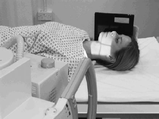

Mandible(Lateral 30 degrees Cephalad)
Centering point:The central ray is angled 30 degrees cranially at an angle of
60 degrees to the cassette and is centred 5 cm inferior to the
angle of the mandible remote from the cassette.

Cassette Size:24cm x 30cm (12 x 10 ins)
Landscape
Exposure Factors:70kVp on
20mAs
FFD:100cm
Bucky/Grid:Moving or Stationary Grid
Filter:No
Collimation:Collimate to include the whole of the mandible and
temporo-mandibular joint (TMJ) (include the external auditory
meatus (EAM) at the edge of the collimation field)
Pathologies:Injuries, Foreign Body
Position of patient and cassette
- The median sagittal plane should be parallel with the cassette
and the inter-pupillary line perpendicular.
- The neck may be flexed slightly to clear the mandible from
the spine.
- The cassette and head can now be adjusted and supported so
the above position is maintained but is comfortable for the
patient.
- The long axis of the cassette should be parallel with the long
axis of the mandible and the lower border positioned 2 cm
below the lower border of the mandible.
- The projection may also be performed with a horizontal beam
in trauma cases when the patient cannot be moved.
- In this case, the patient will be supine with the median sagittal
plane at right-angles to the tabletop. The cassette is supported
vertically against the side under examination.